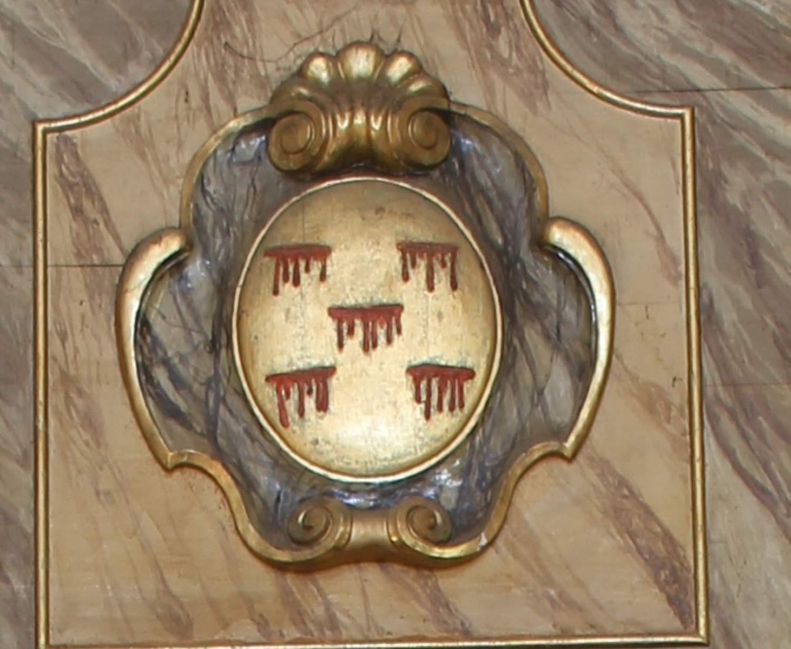

L’escut de les cinc llagues és la representació simbòlica de les ferides que Jesús va patir durant la Passió: les quatre a mans i peus pels claus de la crucifixió, i la cinquena al costat per la llança.
← Tornar